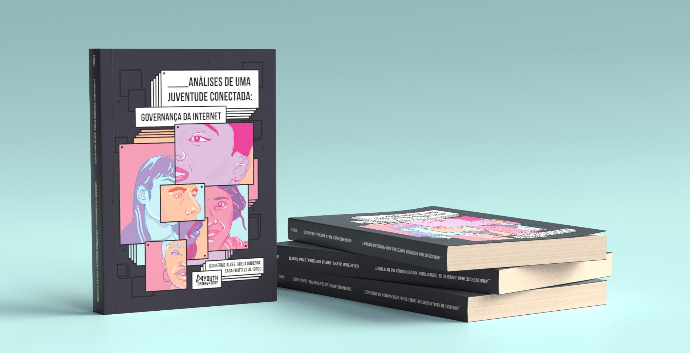
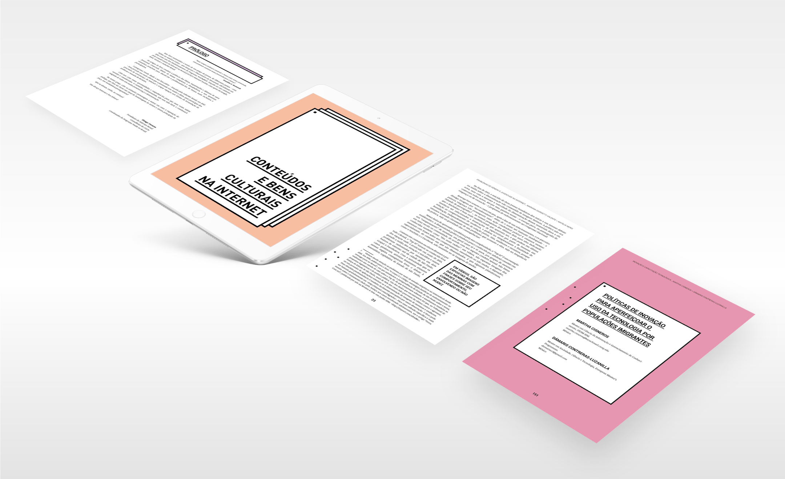

Análises de Uma Juventude Conectada
O livro Análises de uma juventude conectada: Governança da Internet é o resultado de um edital aberto do Youth Observatory que selecionou artigos de 23 jovens latino-americanos, em sua maioria mulheres, vindos da Argentina, Brasil, Colômbia e México. O projeto do livro buscava mostrar a potência das juventudes para refletir, discutir e propor soluções para os desafios que enfrentamos hoje ao falarmos sobre as relações entre tecnologia e sociedade. Foram produzidas versões em Inglês, Espanhol e Português.
Seu projeto gráfico foi desenvolvido em parceria com Ana Seno. A proposta foi de dialogar com a linguagem digital e ao mesmo tempo manter a sobriedade que essas discussões necessitam. Além das versões impressas foram produzidas também versões digitais em pdf e epub.
Clique aqui para baixar a versão web do livro em português.